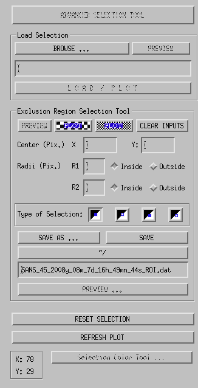

Select the Region of Interest
This is done using this part of the GUI.

- Advanced Selection Tool:
The Advanced Selection tool is still under construction
but will be available soon.
- Load Selection:
To load a selection previously recorded, you can either browse for this ROI
file or enter its full path and hit LOAD / PLOT.
The PREVIEW switch allows you to get a preview of this
file.
- Exclusion Region Selection Tool: